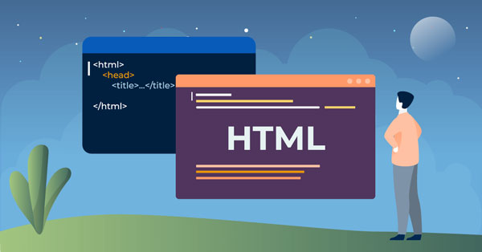

Mặc dù chưa có nhiều kinh nghiệm làm việc thực tế, tôi đã tích lũy được một số kỹ năng thông qua quá trình học tập và tự tìm hiểu. Tôi có thể thiết kế giao diện website cơ bản bằng HTML, CSS và Bootstrap, đồng thời từng thực hiện nhiều bài tập liên quan đến xây dựng website cá nhân và giao diện web đơn giản.
Ngoài ra, tôi cũng có kinh nghiệm chỉnh sửa video bằng CapCut, thiết kế nội dung cơ bản và luôn chủ động học thêm các công nghệ mới để phát triển kỹ năng của bản thân trong tương lai.
